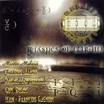

Home Artist links Label link

Martin Maheux Circle - Physics Of Light
| Artist: | Martin Maheux Circle |
| Title: | Physics Of Light |
| Label: | Unicorn Records UNCR-5005 |
| Length(s): | 34 minutes |
| Year(s) of release: | 2002 |
| Month of review: | [03/2003] |
Line up
Martin Maheux - drums, programming
Frédéric Alarie - bass
Rachel Duperrault - violin
Guy Dubuc - piano, keyboards
Jean-Francois Gagnon - trumpet
Tracks
| 1) | Red Shift | 4.37
|
| 2) | Spectrum Walk | 5.22
|
| 3) | Polychromatic | 3.11
|
| 4) | Travelling Through Vacuum | 4.57
|
| 5) | Radiation Pulse | 4.52
|
| 6) | Prism Suite | 4.32
|
| 7) | Light Waves | 6.35
|
Summary
The drummer of Spaced Out on his own. Well not his own really since
he has some partners in science here. On the other hand, the artwork
first makes you think this is jusrt Maheux, but later you spot the fact
that following his name is the word Circle.
The music
On Red Shift my first thoughts go to Jon Hassell, later I am tended more to think of After Crying. The sound wanders between classical
and jazz, but is more of the latter. Do not think this is a
lame jazz album though, because it is fresh, light and varied.
As you might expect, the drums figure on the foreground with
usually light and fast playing. The melody however is also
important enough, and I was never bored. Regarding to sound, the
bass has a low thrum and the drum sound is very open. To make the
music more telling the song also features some atmosphere making
violin.
Spectrum Walk has gurgling electronics, nice loops, a sort of
electronic music, fresh and light. The bass moans, the durmjs
are lightfooted. Polychromatic is similar to the first track.
Travelling Through Vacuum is sad with its opening in violin. The
The piano is jazzy, the keys are soft in the background, drums arfe
fast and light on the fore. Radiation Pulse again featurews
dark keyboards and the trumpet is real jazzy.
Prism Suite is similar to recent solowork by Bruford and or Levin,
Light Waves is the longest track on the album. A fretless bass
solo, spare piano, dark keyboards and a melodic apporach give
this mini album the right conclusion.
Conclusion
A very enjoyable album of fresh light jazzy prog. Not too much\
meandering going on, there is plenty of likable melodies
and the playing is fresh and light, with plenty of sad violin
and Hassell like trumpet playing. The keyboards are
often quite dark. A good combination.
© Jurriaan Hage